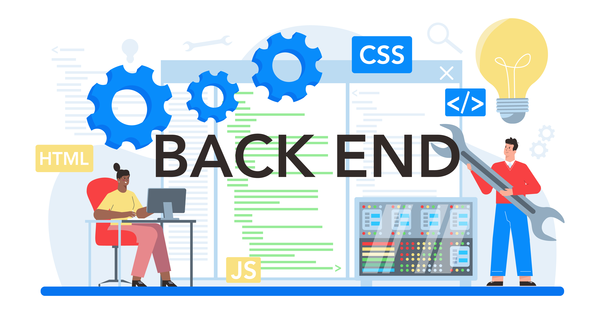

A full stack developer is a versatile professional who possesses the skills and knowledge to work on both the front end and back end of web applications. They are proficient in a wide range of technologies and frameworks, allowing them to handle various aspects of the software development process. Here's some information about full stack developers:
Front End Development: Full stack developers are adept at building the user-facing components of web applications. This involves creating responsive and interactive user interfaces using HTML, CSS, and JavaScript. They often work with front end frameworks and libraries such as React, Angular, or Vue.js to enhance the functionality and aesthetics of web pages.
(Hypertext Markup Language): HTML is the standard markup language used to create the structure and content of web pages. It defines the layout, headings, paragraphs, links, images, and other elements of a webpage.
(Cascading Style Sheets): CSS is a style sheet language used to enhance the appearance and layout of HTML elements. It allows developers to apply styles such as colors, fonts, margins, padding, and positioning to create visually appealing designs.
JavaScript: JavaScript is a versatile programming language used to add interactivity, dynamic behavior, and functionality to web pages. It allows developers to manipulate DOM elements, handle user events, perform client-side validations, and make asynchronous requests to servers.
Front End Frameworks: Front end frameworks are collections of pre-written code, libraries, and reusable components that streamline the development process and provide consistent patterns for building web applications. Popular front end frameworks include:
React: Developed by Facebook, React is a JavaScript library for building user interfaces. It allows developers to create reusable UI components and efficiently manage the state of their applications.
Angular: Developed by Google, Angular is a TypeScript-based framework for building dynamic web applications. It provides features like two-way data binding, dependency injection, and modular architecture.
Vue.js: Vue.js is a progressive JavaScript framework for building interactive web interfaces. It offers a simple and intuitive API, virtual DOM rendering, and component-based architecture.
CSS Preprocessors: CSS preprocessors like Sass (Syntactically Awesome Stylesheets) and Less enhance the capabilities of CSS by adding features such as variables, mixins, nested rules, and functions. They help improve code organization, maintainability, and reusability.
Responsive Design: Responsive design techniques allow web pages to adapt and respond to different screen sizes, resolutions, and devices. This ensures that users have a consistent and optimized experience across desktops, laptops, tablets, and smartphones.
Web Development Tools: Various tools and utilities assist front end developers in building, debugging, testing, and optimizing their code. Examples include code editors (e.g., Visual Studio Code, Sublime Text), browser developer tools (e.g., Chrome DevTools, Firefox Developer Tools), task runners (e.g., Gulp, Grunt), and module bundlers (e.g., Webpack, Parcel).

Back End Development: Full stack developers are also proficient in building the server-side logic and databases that power web applications. They work with programming languages like JavaScript (Node.js), Python (Django, Flask), Ruby (Ruby on Rails), Java (Spring Boot), or PHP (Laravel) to develop robust back end systems. They also have experience working with databases such as MySQL, PostgreSQL, MongoDB, or Redis. Backend technology refers to the technology stack used to develop the server-side logic, database management, and other functionalities that power web applications. It encompasses various programming languages, frameworks, databases, servers, and tools that developers use to create the server-side components of web applications.
Programming Languages:
JavaScript: With the rise of Node.js, JavaScript is now commonly used for both front end and backend development. It allows for full-stack JavaScript development.
Python: Python is known for its simplicity and readability. Popular Python web frameworks include Django and Flask.
Ruby: Ruby is the programming language behind the Ruby on Rails framework, which emphasizes convention over configuration and rapid development.
Java: Java is a widely-used programming language for building enterprise-level web applications. Popular Java frameworks include Spring and Jakarta EE.
PHP: PHP is a server-side scripting language commonly used for web development, especially for building dynamic web pages or web applications. Popular PHP frameworks include Laravel, Symfony, and CodeIgniter.
C#: C# is the programming language of the .NET framework, which is commonly used for building scalable and robust web applications on the Microsoft platform.
Backend Frameworks:
Node.js: Node.js is a JavaScript runtime environment that allows developers to run JavaScript on the server side. It is commonly used with frameworks like Express.js.
Django: Django is a high-level Python web framework that encourages rapid development and clean, pragmatic design.
Ruby on Rails: Ruby on Rails is a web application framework written in Ruby that follows the Model-View-Controller (MVC) architectural pattern.
Spring Boot: Spring Boot is an opinionated framework for building production-ready Java applications quickly and with minimal setup.
ASP.NET: ASP.NET is a web framework for building modern web applications and services with .NET. It includes MVC, Web API, and other components.
Databases:
Relational Databases: MySQL, PostgreSQL, Microsoft SQL Server, Oracle Database, SQLite